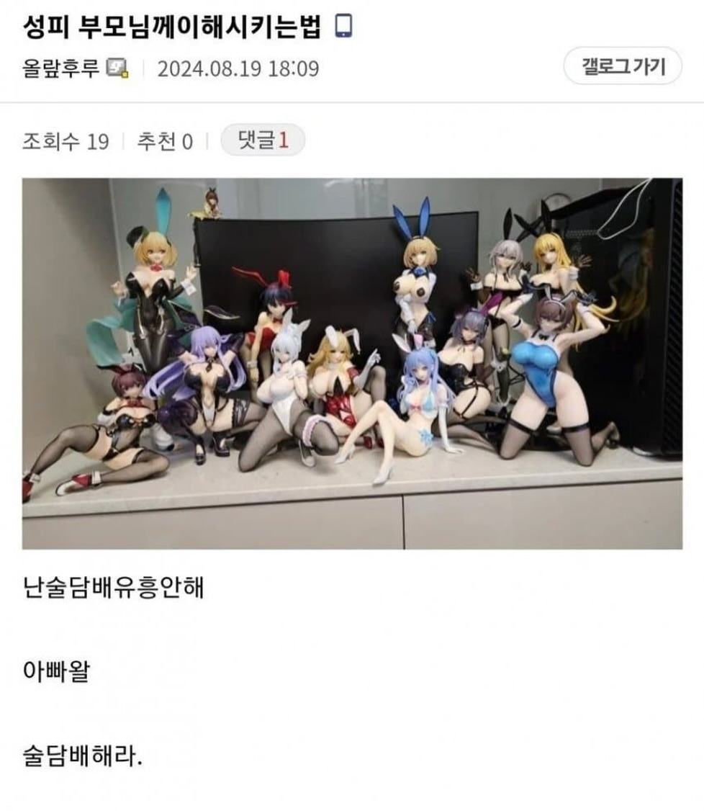

64 · 10 · 12 시간 전 · 원문

성인피규어는 해롭지 않아요
수집 당시 댓글 10개
피카츄라이츄아구몬꼬부기 · 13 시간 전
해로워진 사람들이 많이 사는 것 같아오
잠만자 · 13 시간 전
아빠 : 내 술담배가 늘어간다...
질문 · 13 시간 전
둘다 엄대엄이지
만주의schd · 13 시간 전
나도 컴터앞에 피규어모아두니까 아버지가 차라리 술이나마시라그러시드라피규어가 백번나은거같은데
단톡경보기 · 13 시간 전
제발 해다오..
illiil · 12 시간 전
신체에 병은 안생기니 술담배보단 나을지도
↳ 답글 · 무기짱 · 12 시간 전
일찍 가는것보단 낫지
비숑은산책중 · 12 시간 전
오늘도야근이다 · 12 시간 전
며느리가몇명이여?
모닝푸딩 · 4 시간 전
술담배피규어하는 아들로 진화!
해로워진 사람들이 많이 사는 것 같아오